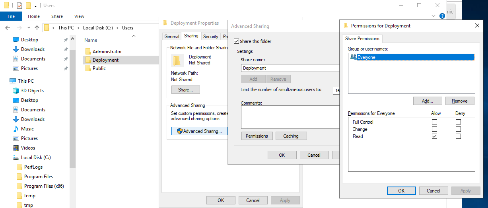
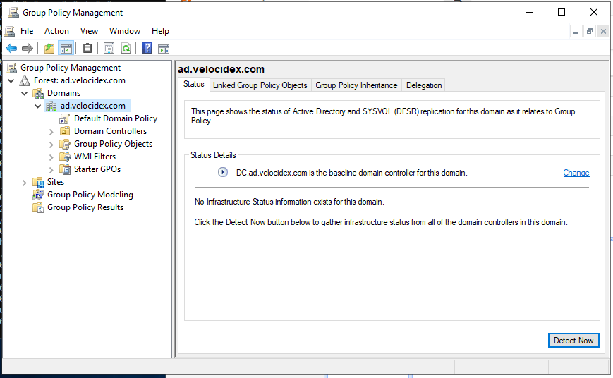
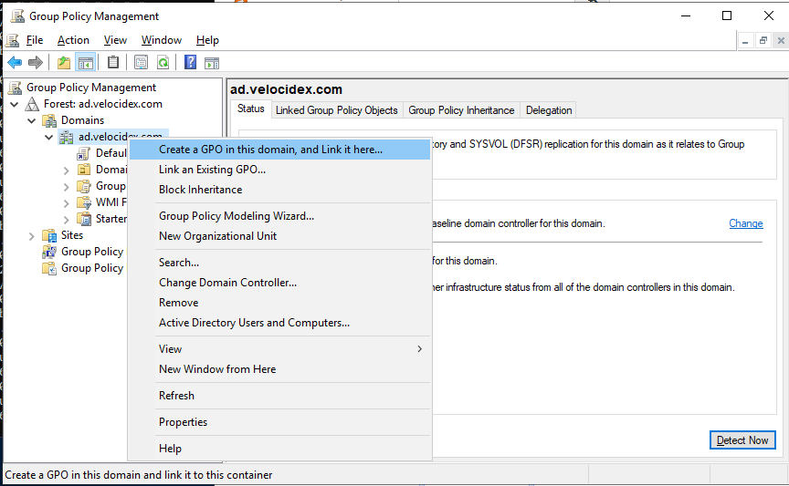
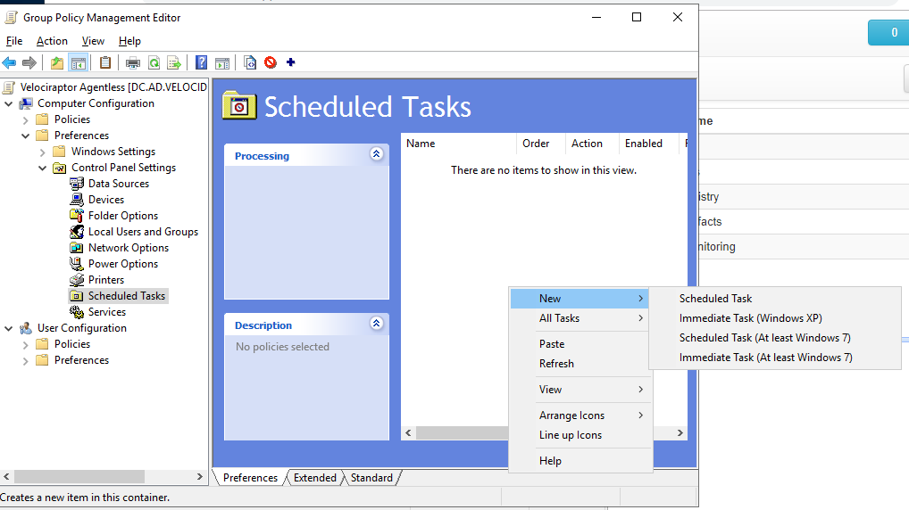
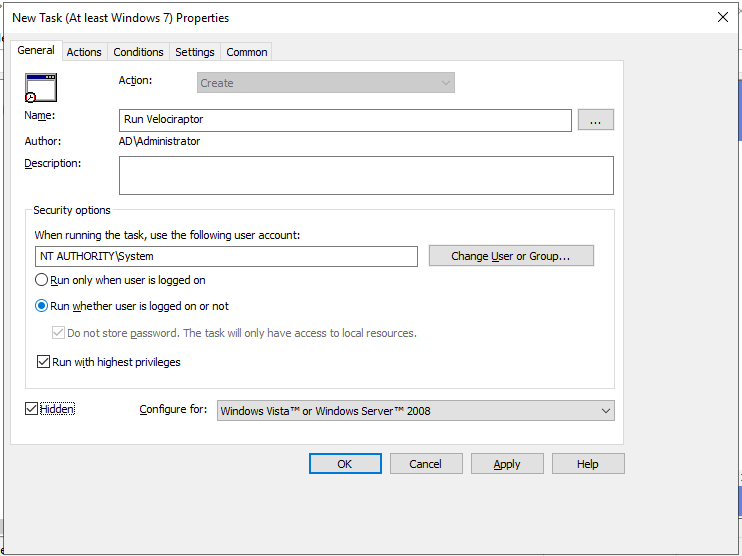
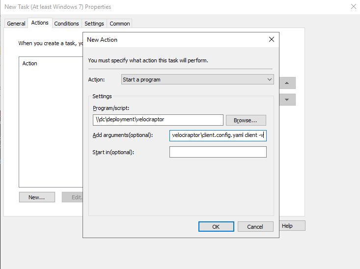
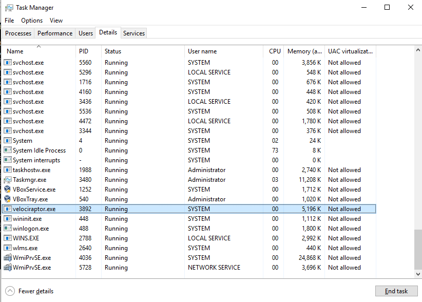

Deploying Clients
Velociraptor endpoint agents are called clients. Clients connect to
the server and wait for instructions (which mostly consist of VQL
statements), they then run any VQL queries and return the result to
the server.
There are a number of ways to run clients, depending on your needs. Ultimately, however, the same Velociraptor binary is run with the client configuration file generated in the previous steps providing it with the key material and configuration.
This page summarizes the recommended ways to run the clients, and discusses the pros and cons of each approach.
Note that all Velociraptor binaries are the same - there is no distinction between client binaries or server binaries. Therefore you can run the server or the client on each supported platform. It is simply command line options telling the binary to behave as a server or client.
Running clients interactively
This method is most suitable for testing your deployment. In a command shell simply run the client using the client configuration.
$ velociraptor --config client.config.yaml client -v
The first time the client connects it will enroll. The enrollment
process requires the client to reveal basic information about itself.
Installing an MSI
An MSI is a standard windows installer package. The advantages of using a standard packaging format is that most enterprise system administration tools are used to deploying software in MSI packages. Therefore you can use SCCM or group policy to add the MSI to the assigned software group. See How to use Group Policy to remotely install software in Windows Server 2008 and in Windows Server 2003
Official release MSI
The recommended way to install Velociraptor is via the release MSI on the Github release page. Since the Velociraptor client requires a configuration file to specifically tell it where to connect to, we can not package the configuration file in the official release. Therefore the official MSI does not include a configuration file.
The official release installs the Velociraptor service into
C:\Program Files\Velociraptor\. When the service starts, it attempts
to load the configuration file from C:\Program
Files\Velociraptor\Velociraptor.config.yaml.
If that file is not found, Velociraptor will wait and retry periodically to locate the configuration file. When the file is found, the client will be started.
Therefore when installing from the official MSI package you need to:
Assign the MSI via Group Policy.
Copy the configuration file from a share to the Velociraptor directory. This can be done via Group Policy Scheduled tasks or another way (See the Group Policy procedure outlined below).
As soon as the configuration file is copied, Velociraptor will begin communicating with the server.
One of the main benefits in using the official Velociraptor MSI is that the MSI and the executable are signed. Windows defender aggressively quarantines unsigned binaries, so it is highly recommended that Velociraptor be signed.
Installing using custom MSI package
The official Velociraptor MSI package installs a service with a predictable name. If you want to obfuscate Velociraptor a bit, you might want to build your own MSI package with different binary names, service name etc.
To create one of these follow the instructions here.
If building your own MSI you might as well just include your own configuration file in it. Then you simply assign your MSI to the group policy and have it installed everywhere. You may want to also sign the MSI.
Installing the client as a service
It is possible to tell the executable to install itself as a service. This option is not recommended because it does not use a proper package manager, and therefore Velociraptor can not be easily uninstalled.
Nevertheless this approach is possible to do via the Group Policy scheduled tasks procedure outlined below. Simply run the following command:
# velociraptor.exe --config client.config.yaml service install
This will copy the binary to the location specified in the
configuration file under Client.windows_installer. You can change
the name of the binary and the service name.
Agentless deployment
There has been a lot of interest lately in “Agentless hunting” especially using PowerShell. There are many reasons why Agentless hunting is appealing - there are already a ton of endpoint agents and yet another one may not be welcome. Sometimes we need to deploy endpoint agents as part of a DFIR engagement and we may not want to permanently install yet another agent on end points.
In the agentless deployment scenario we simply run the binary from a network share using group policy settings. The downside to this approach is that the endpoint needs to be on the domain network to receive the group policy update (and have the network share accessible) before it can run Velociraptor. When we run in Agentless mode we are typically after collecting a bunch of artifacts via hunts and then exiting - the agent will not restart after a reboot. So this method is suitable for quick hunts on corporate (non roaming) assets.
See this blog post for the details of how to deploy Velociraptor in this mode.
Creating a network share
The first step is to create a network share with the Velociraptor binary and its configuration file. We will run the binary from the share in this example, but for more reliability you may want to copy the binary into e.g. a temp folder on the end point in case the system becomes disconnected from the domain. For quick hunts though it should be fine.
We create a directory on the server (I will create it on the domain controller but you should probably not do that - find another machine to host the share).

I created a directory C:\Users\Deployment and ensured that it is
read only. I have shared the directory as the name Deployment.
I now place the Velociraptor executable and client config file in that
directory and verify that I can run the binary from the network
share. The binary should be accessible via
\\DC\Deployment\velociraptor.exe:

Creating the group policy object
Next we create the group policy object which forces all domain connected machines to run the Velociraptor client. We use the Group Policy Management Console:

Select the OU or the entire domain and click “Create New GPO”:

Now right click the GPO object and select “Edit”:

We will create a new scheduled task. Rather than schedule it at a particular time, we will select to run it immediately. This will force the command to run as soon as the endpoint updates its group policy settings (i.e. we do not want to wait for the next reboot of the endpoint).

Next we give the task a name and a description. In order to allow
Velociraptor to access raw devices (e.g. to collect memory or NTFS
artifacts) we can specify that the client will run at
NT_AUTHORITY\SYSTEM privileges, and run without any user being
logged on. It is also worth ticking the “hidden” checkbox here to
prevent a console box from appearing.

Next click the Actions tab and add a new action. This is where we
launch the Velociraptor client. The program will simply be launched
from the share (i.e. \\DC\Deployment\velociraptor.exe) and we give
it the arguments allowing it to read the provided configuration file
(i.e. --config \\DC\Deployment\client.config.yaml client -v).

In the setting tab we can control how long we want the client to run. For a quick hunt this may be an hour or two but maybe for a DFIR engagement it might be a few days. The GPO will ensure the client is killed after the allotted time.

Once the GPO is installed it becomes active for all domain machines. You can now schedule any hunts you wish using the Velociraptor GUI. When a domain machine refreshes its group policy it will run the client, which will enroll and immediately participate in any outstanding hunts - thus collecting and delivering its artifacts to the server. After the allotted time has passed, the client will shut down without having installed anything on the endpoint.
You can force a group policy update by running the gpupdate
program. Now you can verify that Velociraptor is running:
